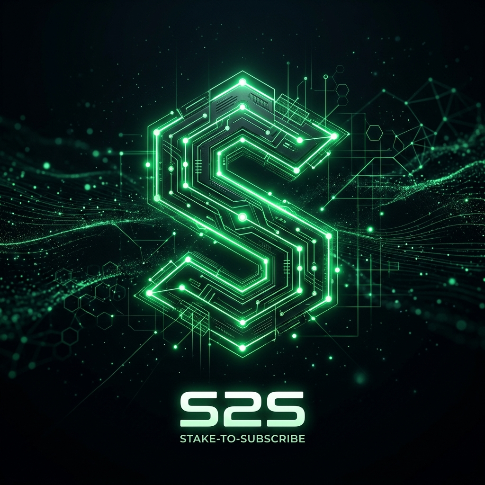

Seeker v2.0 Protocol
Monetize Without Friction.
The ultimate yield-routing layer for the Solana Mobile economy. Users stake once, keep their principal, and unlock your entire ecosystem.
npx @s2s-kit/cli init

S2S Verification Demo
Connection Pending
Clean Integration.
// 1. Bootstrapping the S2S context
import { S2SProvider } from '@s2s-kit/react';
// 2. Implement the Paywall hook
const { hasAccess } = useSubscription();
if (!hasAccess) return <Gatekeeper />;